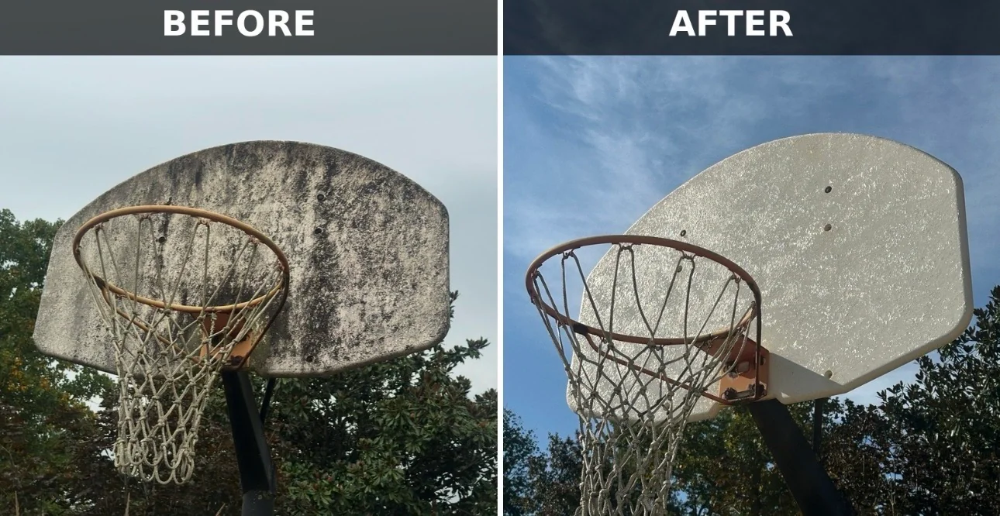
Basketball hoop cleaning · Nitro, WV
Before and after basketball backboard cleaning in Nitro, West Virginia, showing dark surface buildup removed.
Blue Ridge · Hurricane & nearby West Virginia communities
Real completed cleaning projects, from house siding and walkways to patios, fences and roofing. Browse the full comparisons and explore the service behind each result.
Watch the Charleston fence-cleaning video →Each photo shows a completed project. Results depend on the surface, its condition and the type of buildup.

Before and after basketball backboard cleaning in Nitro, West Virginia, showing dark surface buildup removed.
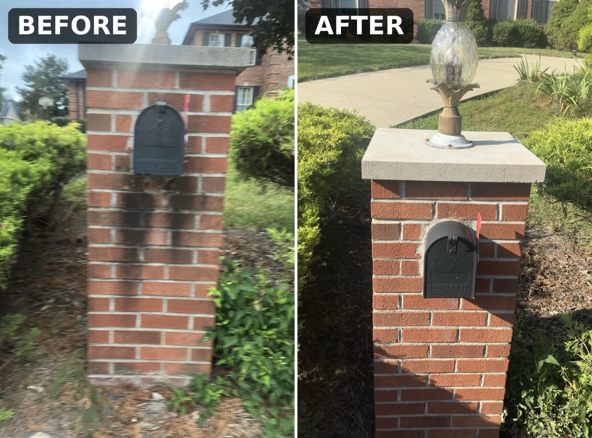
Before and after brick mailbox and cap cleaning in Milton, West Virginia.
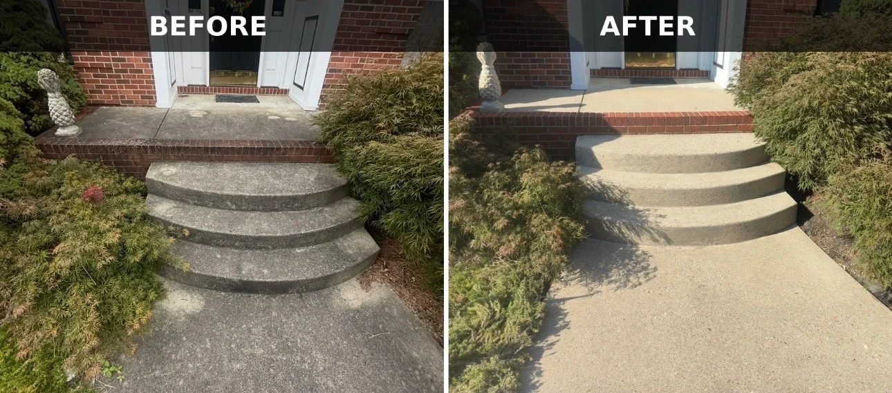
Before and after concrete entry steps and front walkway pressure washing in Hurricane, West Virginia.
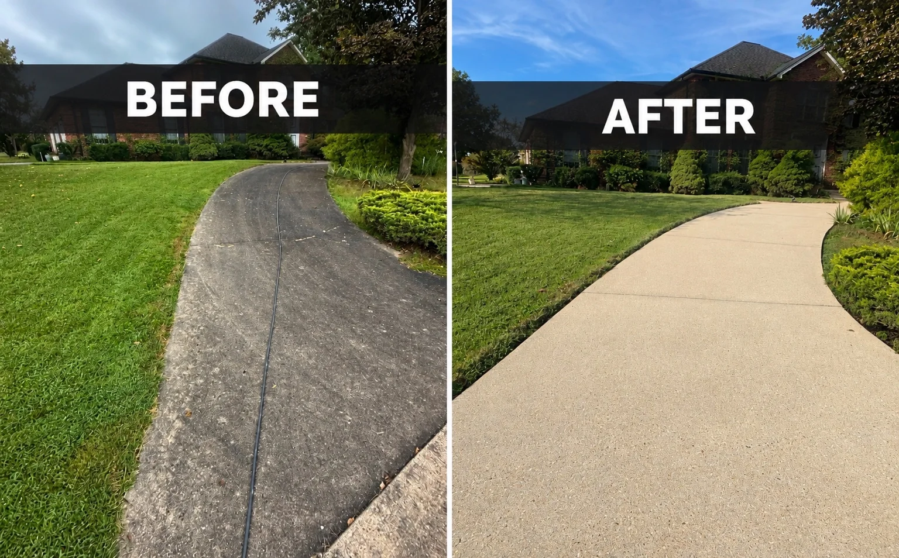
Before and after a curved concrete walkway cleaning in Hurricane, West Virginia.
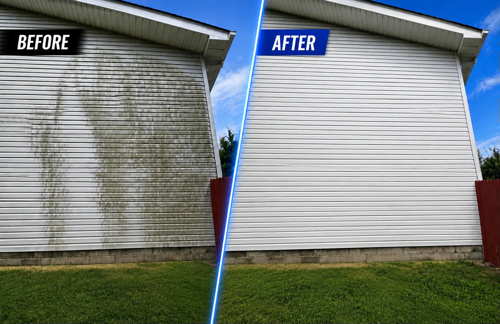
Clean residential siding in West Virginia
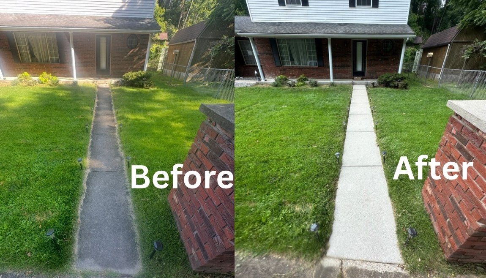
A brighter, cleaner front walkway
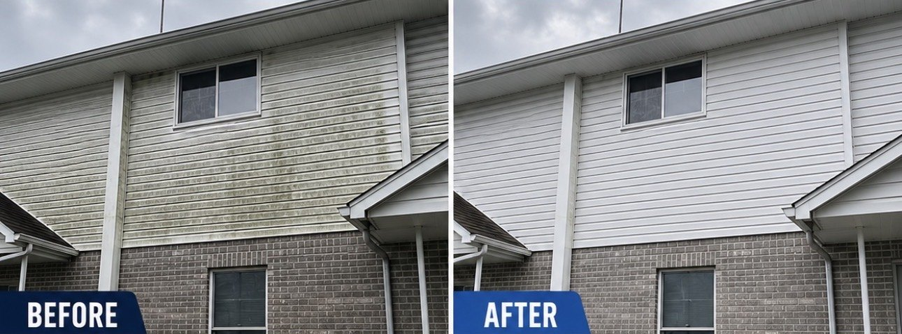
Heavy organic buildup carefully removed
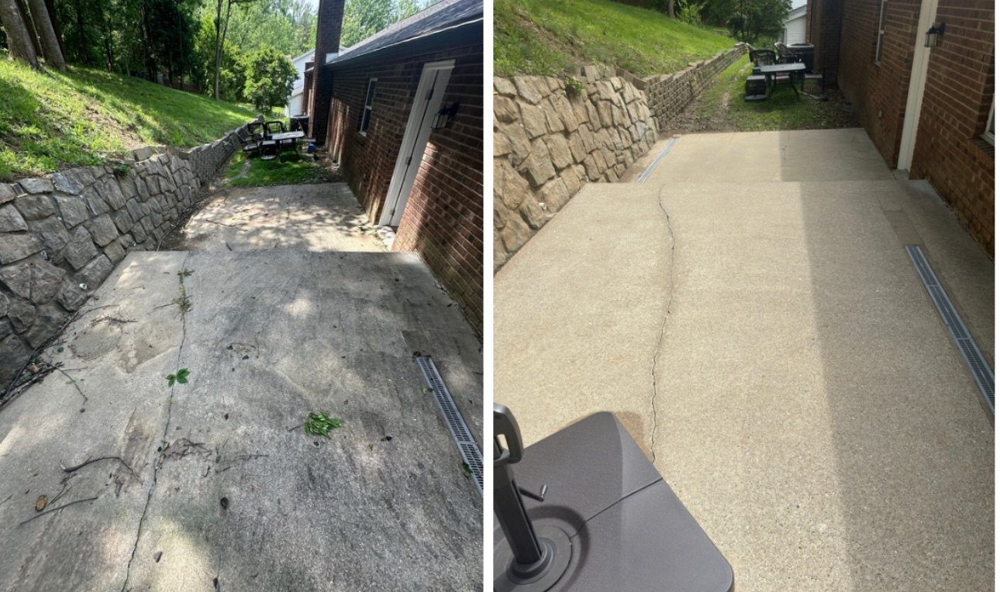
Dirt and debris cleared from concrete
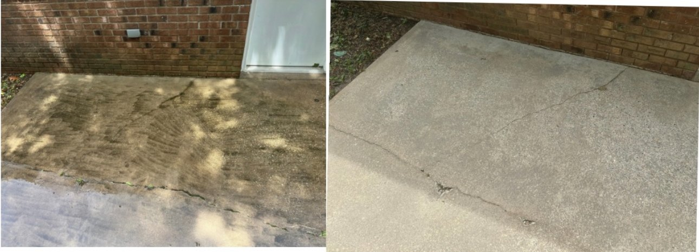
Built up grime lifted from the surface
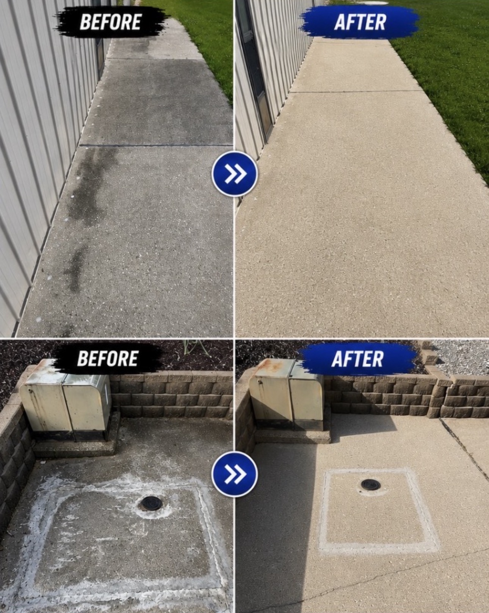
Refreshed walkways and concrete surfaces
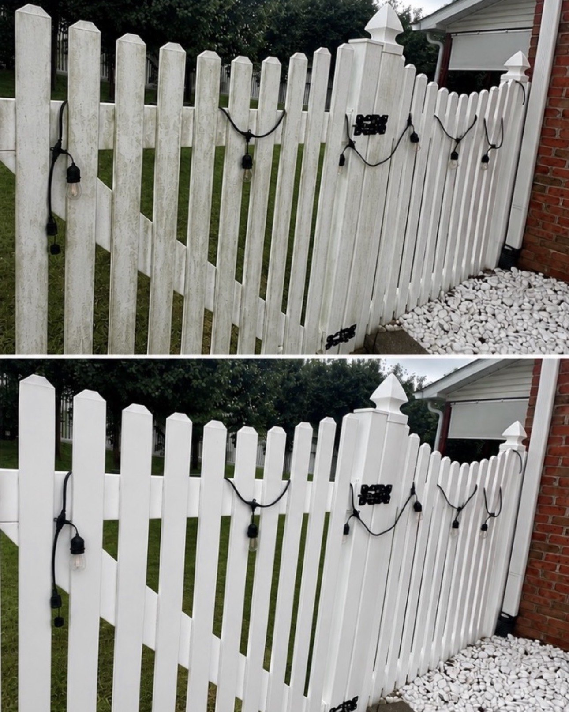
A clean, bright finish restored
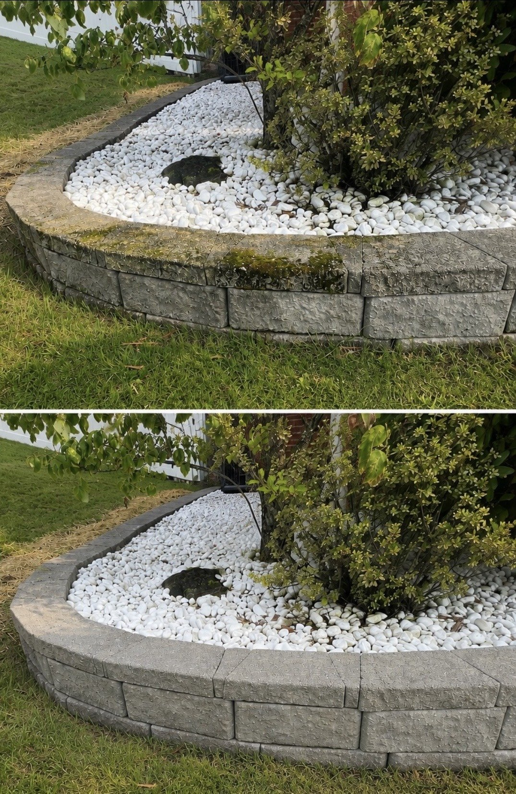
Moss and discoloration carefully removed
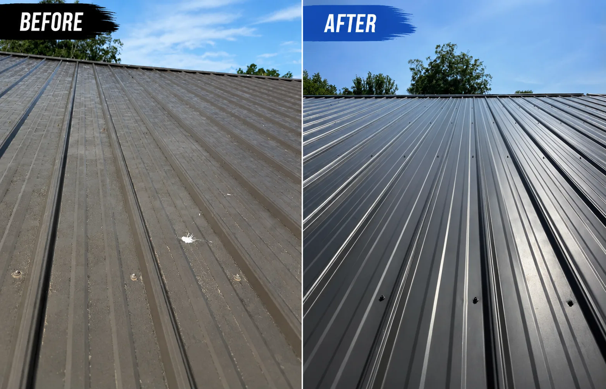
Careful cleaning for metal roofing
Watch a recent job · Charleston, WV
This 41-second clip shows buildup being cleaned from a wood fence. Watch the change across the boards as the work progresses.
Send your address, the surfaces you want cleaned and any helpful photos. We will confirm the scope and provide a free quote.
Request a free quote →